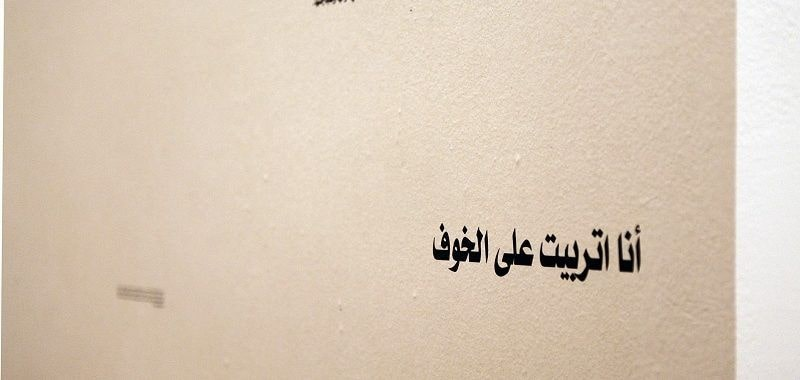
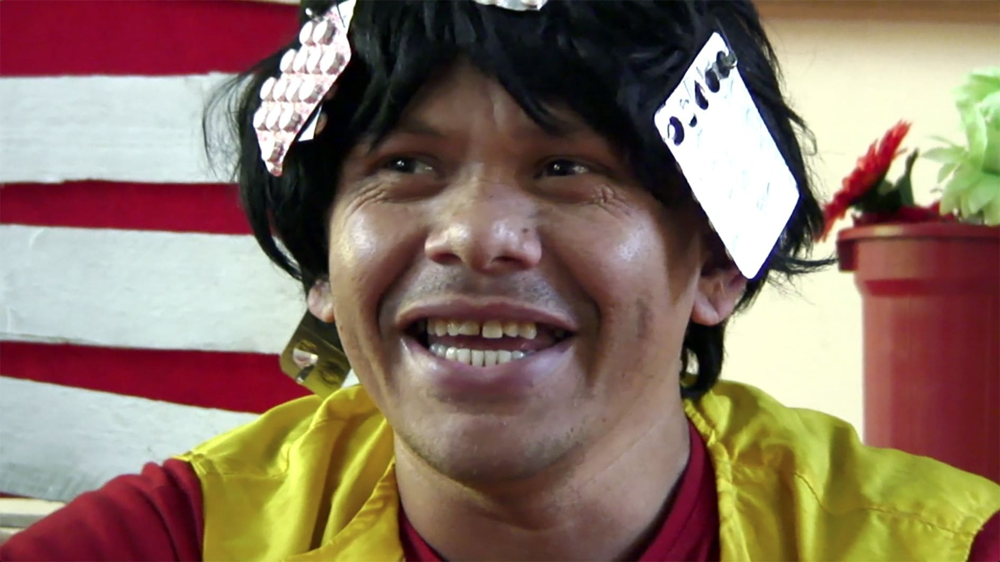
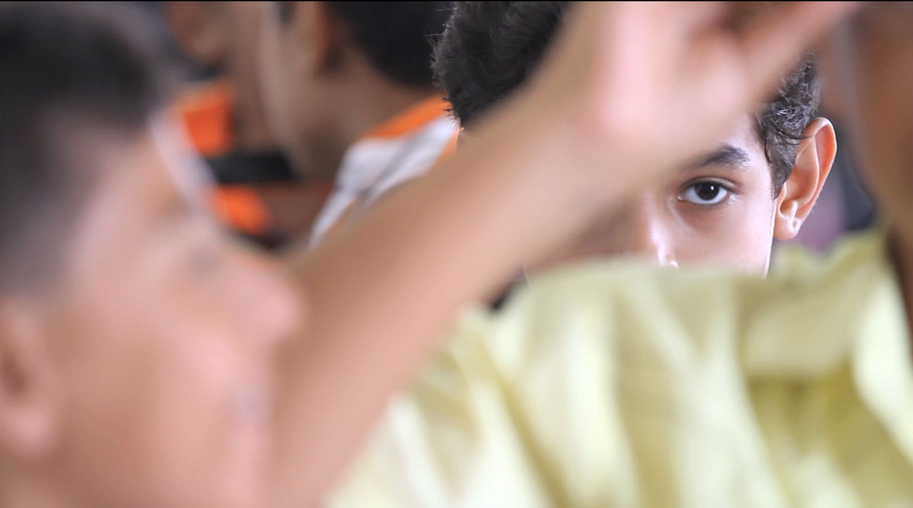
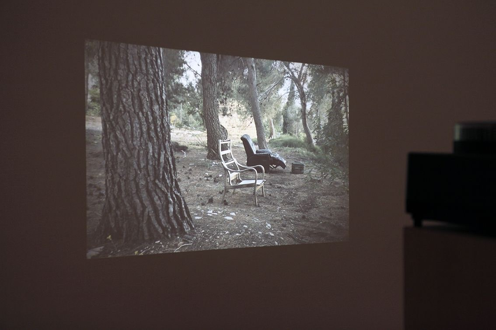

بقلم إسماعيل فايد

معرض «مزمن: عن التعب النفسي كحالة عامة» - الصورة: مركز الصورة المعاصرة
«مزمن: عن التعب النفسي كحالة عامة» عرض فني قُدم في مركز الصورة المعاصرة، وتناول سؤالًا صعبًا: كيف ينظَم معرضٌ في سياق قمع سياسي حاد، دون أن يكون المعرض في حد ذاته «تصريحًا سياسيًا»، مع بيان البعد العاطفي والمحوري والنفسي العميق في هذا السياق؟
يتجسد هذا البعد في صور فردية وجماعية، ومع ذلك يظل غير مطروح للتوثيق أو الإقرار الفردي. ومن خلال طرحه في الفصل الثاني من «لو لم يكن هذا الجدار» يدقق هذا المشروع في العديد من الإشكاليات في فهمنا للفن الحديث والمشاعر على المستويين العالمي والمحلي.
على المستوى العالمي يبدو لي أن الفن المعاصر في أغلبه لا يتقاطع مع سيكولوجية المشاعر، بينما يبدو أن السيكولوجيا المحملة بالمعاني بدورها تتعارض مع إخضاع مفهومنا عن المشاعر إلى التشخيص الطبي. وفي الوقت ذاته يضفي تركيز الفن على الأطر «النقدية» المفاهيمية ثقلًا كبيرًا على الجانب الفكري من الفن (فغالبًا ما يوصف العمل بكلمات مثل «تحليلي» و«نقدي» و«يتقصى» و«يتحرى»)، ربما للتصديق على الممارسات الفنية أو لإضفاء طابع الجدية عليها. وقد يكون هذا أمرًا متوارثًا منذ اقتران المذهب المثالي في مطلع الحداثة بالتشكيك القوي فيه بعد الحربين العالميتين، ليهيمن الفكر النقدي على شكلية الفن أو سيكولوجيته، ويتجلى انعدام الثقة في المشاعر والتفكير الذاتي النفسي.
بالإضافة إلى ذلك، أدى استخدام التقنيات في ترسيم السلوك البشري ووصفه وتوقعه وفقًا للعلم (في انتصار للعلوم العصبية على علم النفس) إلى نفي علم النفس والتحليل النفسي—قرينه التاريخي—إلى غياهب العلم. ساهم ذلك في تجاهل أهمية علم النفس والتحليل النفسي في تشكيل الفن الحديث منذ بدايات القرن العشرين (لكن قد تكون هذه التوجهات في سبيلها إلى التغيير).
في كلتا الحالتين، عندما تخلق السلطوية والقمع السياسي حالة نفسية خاصة جدًا، من المنطقي أن نتناول مصطلحات مثل «القلق» و«التعب» و«الاكتئاب» بطريقة تقر بأهميتها وقادرة على التعبير عنها بدلالة.
أما على المستوى المحلي، فقد لعب التحليل النفسي دورًا هامًا في تطور الفن الحديث، بدءًا من الانخراط الفكري لمجموعة الفن والحرية في بداية الأربعينيات (ولنا في كتابات رمسيس يونان وجورج حنين مثالًا على ذلك)، ووصولًا إلى رسومات ومنحوتات عصمت داوستاشي السوريالية والنفسية من عصر أحدث. وخارج نطاق الفن، بدأ عالِم النفس يوسف مراد تدريس علم النفس بالعربية في جامعة القاهرة منذ بداية الأربعينيات. فهذا العلم ومنهجه موجودان على الساحة الفكرية منذ فترة طويلة، لكن الجانب العلاجي والمنهجية التقدمية في التعامل مع الاختلافات الذاتية للفرد والمجموعة غائبان، كما أن الطب النفسي في مصر مسيَّسٌ إلى أقصى حد. ففي الأسبوع الماضي قال أحمد عكاشة، رئيس الجمعية المصرية للطب النفسي، في حوار تلفزيوني إن الشعب المصري لم تتكون لديه ديمقراطية، وإن إعطاء الحرية والديمقراطية لجاهل مثل إعطاء السلاح لمجنون.
وفي ظل المأزق الشائك بين شد وجذب حول وضع علم النفس المسيس والمتداعي محليًا وعالميًا، يصبح عرض «مزمن» محاولة ضرورية لمواجهة هذا الوضع، مع الحفاظ على المشاركة السياسية ومراعاة مقومات العملية الفنية المثيرة للاهتمام في الوقت ذاته. تختبر ثلاثة أعمال مدى راديكالية وتقدمية حركات الطب النفسي في ما يخص أشكال الرعاية النفسية المؤسسية، بينما يتناول عملان حالات نفسية محددة وكيفية تمكن الفيلم كوسيط من التعبير عنها.
تنتمي أعمال ألبرتو جريفي ودورا جارسيا وخوارج العباسية إلى المجموعة الأولى. يعد فيلم جريفي Il manicomio—Lia (المصحة – ليا، 1977)، ومدته 27 دقيقة، توثيقًا بارعًا للمؤتمر المضاد للمؤتمر الرسمي العالمي للتحليل النفسي والذي عقد في إيطاليا. من خلال لقطة واحدة مقربة ومتوسطة لثلاثة حوارات ذاتية متداخلة نرى عمل جريفي المتقن في دراما التوثيق. نعلم أن أيًا من هذه الحوارات لم يكتب، ولا تنقل لنا الصورة المغبّشة باللونين الأبيض والأسود، وخطاب ليا الحماسي ومن يتداخل حديثهم معها، إحساسًا مسرحيًا أو مرتبًا، ومع ذلك يصعب تصديق أنه مجرد توثيق لخلو الفيلم من أي عيوب بالتوقيت أو المونتاج. يعكس انتقاد ليا اللاذع لمنظومة رعاية الصحة العقلية المؤسسية أشكال القوى التي تحدد ماهية المرض وكيفية التعامل معه.

من فيلم ألبرتو جريفي «المصحة – ليا» (1977) - الصورة: مركز الصورة المعاصرة
يتكون الفيلم من ثلاثة مقاطع: حوار مع أعضاء فرقة مسرحية في مستشفى تريستي للعلاج النفسي في إيطاليا، وحوار آخر مع مجموعة شبيهة في ريو دي جانيرو في البرازيل، ولقاء مع الناشطة كارمن رول، وهي عضو سابق في مجموعة المرضى الاشتراكيين الألمانية الراديكالية (Sozialistisches Patientenkollektiv)، وكانت هذه المجموعة تعتبر المرض العقلي إما نتيجة ثانوية ومباشرة للرأسمالية أو اختلافًا نفسيًا تصنفه الرأسمالية كمرض في محاولتها للسيطرة عليه. جاء مونتاج المقاطع ليخلق إيقاعًا خاصًا في حديث و«أداء» المتحدثين. ونجحت جارسيا في تصوير تفرد شخصياتها من خلال طريقة حديثهم أو نظراتهم أو مجرد وجودهم، لنشاهد عملًا مشوقًا، وإن كان يشعرنا بانزعاج ما. ويكشف الفيلم مباشرة عن إمكانيات الدراما وعلاقتها شديدة التعقيد بـ«الجنون»، وكان أثر ذلك مثيرًا للاهتمام ومربكًا في الوقت ذاته. بدا المرضى سعداء ومستقرين نفسيًا، لكن صفاتهم وطبائعهم الخاصة والمميزة تجعلنا نتساءل عن مدى إمكانية تبنينا نظرة بازاليا المثالية لعالم خالٍٍ من الجنون.
يتأمل معرض «كل ذلك يشعرني بالإهانة» (2016) لخوارج العباسية السياق المحلي لفهم الاضطراب العقلي والشعوري. وتعمل مجموعة خوارج العباسية من خلال التعبير عن المشاعر السلبية كطريقة لكشف علاقاتهم الإشكالية مع السياق الاجتماعي والأخلاقي والثقافي الأوسع. يتحكم هذا السياق في نوعية المشاعر والطرق المقبولة للتعبير عنها، رجوعًا إلى منظومة محافظة وأبوية ومنحازة جنسيًا. يقدم المعرض اقتباسات مطبوعة على ورق تروي مواقف مرَّ أصحابُها فيها بمشاعر سلبية أو واجهوا فيها مجتمعًا لا يرحم، بسبب تعبيرهم عن هشاشة نفسية أو مشاعر سلبية. وكان يمكن لهذه الاقتباسات أن تخرج بصورة مثيرة للاهتمام، لولا صياغتها التي جاءت أشبه بكتابة اعترافات ساذجة. شعرت أنه كانت تنبغي إتاحة فرصة أفضل للمشاركين للتعبير عن واقع مشاعرهم بدلًا من نقله بتبسيط مخل في شكل كتابي.
ويستكشف عملان آخران قدرة الأفلام نفسها على تناول الجنون والانحراف والصدمة في سياقات مؤسسية وسياسية مختلفة: فيلم Compos Mentis («سليم العقل»، 2016) لمحمد شوقي ومدته 15 دقيقة، ومعرض «فيلم غير منتج» لأوريل أورلو (2012-2014).
يضم مقال شوقي المصور مشاهد تتنقل بين أماكن يتصادم فيها «الإيمان» و«الجنون» أو يلتحما، إلى جانب تعليق صوتي يضم مقتطفات من أفلام ونصوص أدبية عربية شهيرة تتناول الجنون. يُبرز الفيلم الاضطرابات والنقاط الفارقة في مواقف يعتبر فيها السلوك المقبول اجتماعيًا سلوكًا «مجنونًا» أو «سخيفًا»، أو يتحول فيها «الجنون» و«السخف» إلى شعائر وأداءات راسخة ومقبولة دينيًا واجتماعيًا—بدءًا من مراسم التعميد ووصولًا إلى عروض السيرك والمواكب الاستعراضية. ونرى في أحد المشاهد أطفالًا يُعمَّدون بينما يبدو عليهم انزعاج واضح، وتحيط بهم عائلاتهم التي تحدق فيهم بمزيج من السعادة المصطنعة والتناقض النفسي. وفي مقطع آخر نرى أشخاصًا يرتدون ملابس أنيقة ويرقصون على موسيقى صاخبة في أجواء كرنفالية في أحد مواكب نيويورك. ويجعلنا هذا الاستعراض العلني الجامح نفكر في حدود ما هو مقبول اجتماعيًا وفي أي سياق يكون. وعلى مدار الفيلم يميل التعليق الصوتي ومقتطفات الأفلام القديمة إلى السخرية، ليبّطنوا العمل بأكمله بمسحة من الكوميديا السوداء—ويذكرنا ذلك مرة أخرى بمدى تداعي التصور عما هو «عاقل» و«طبيعي».

من فيلم محمد شوقي «سليم العقل» (2016) - الصورة: مركز الصورة المعاصرة
يتكون معرض «فيلم غير منتج» لأورلو من عناصر نصية وبصرية وسمعية تلمح كلها إلى مقترح متخيل لفيلم ما. لكنها لا تتحول إلى فيلم، لأنها تواجه حدود هذا الوسيط للتعامل مع أمر بعمق الصدمة. يتناول الفيلم ميراث مذبحة الفلسطينيين على يد الصهاينة عام 1948 في دير ياسين، وهي قرية قريبة من القدس، وكيف تحول مكان المذبحة إلى مستشفى كفر شاؤول للأمراض العقلية، لعلاج ضحايا الهولوكوست. وتلخص هذه الحقيقة في سخرية مريرة إخفاقات المشروع الصهيوني وعذاباته. ويكشف طمس مذبحة لعلاج ضحايا مذبحة أخرى مدى سهولة تحول الضحية إلى جانٍ، يخلق بدوره ضحايا آخرين.

من معرض أوريل أورلو «فيلم غير منتج» (2012-2014) - الصورة: مركز الصورة المعاصرة
يقدم المعرض أجزاءً من التقييمات النفسية للمقيمين بالمستشفى مطبوعة على ورق طباعة عادي، بالإضافة إلى صور بلا أشخاص للمستشفى، معروضة على الحائط المقابل. خلق ذلك مساحة نصية بصرية تلتصق بالذاكرة ولا يمكن أن يملأها سوى خيالنا، توحي بأنه لا سبيل سوى الغياب والصمت—ما يتطلب منا التفكير والتخيل—لتجاوز حدود الوسيط. كما توجد أيضًا القصة المصورة، وهي كتيب يضم رسومًا لأيتام من ميتم ومدرسة أنشأتهما هند الحسيني، المرأة التي أنقذت 55 يتيمًا من دير ياسين. عمل العديد من الأطفال على هذه الرسوم في ورشة عمل مع أورلو لرواية تاريخ المكان وصنع فيلم عنه. وكان هذا أكثر الجوانب مباشرةً: فرغم استخدام ما يتخيله الأطفال عن الصدمة والموت، إلا أنه افتقر إلى هذا الاستخدام المؤثر للغياب. وأخيرًا، في غرفة مجاورة تجد عرضًا صوتيًا يأخذك في جولة حول مستشفى الأمراض العقلية ودير ياسين، ليدمجهما سويًا ويدعونا مرة أخرى إلى تخيل إمكانية تعايشهما سويًا—أو بالأحرى استحالة ذلك.
كان معظم الأعمال مكثفًا وكان بعضها يردد صدى الآخر. وبشكل ما ترادفت الأعمال أو عكست بعضها الآخر (حيث عكس فيديو جارسيا عمل جريفي، وعكس عملا أورلو وخوارج العباسية فيلم شوقي). كما فرضت مدة الأفلام الطويلة تنسيقًا خاصًا للمساحة، بحيث يتمكن المشاهد من الجلوس على بضع وسائد أو مقعد ليقضي فيها الوقت.
كانت هناك صلة واضحة بالمعرض الآخر لمركز الصورة المعاصرة «تحية لمن سألوا عني» (2015) ضمن مشروع «لو لم يكن الجدار». يقدم فيلم خافير تيليز O Rinoceronte de Durer (لوحة وحيد القرن لدورير، 2010) إعادة تمثيل لمرضى معاصرين في غرفة احتجاز مراقبة بمستشفى ميجيل بومباردا النفسي، بينما توجد سمات مشتركة بين معرض «فيلم غير منتج» لأورلو وفيلم Nice Time (وقت طيب، 2014) لإيما ولوكاو وانامباوا، حيث يُستخدم الأرشيف لطرح أسئلة حول رواية المستعمر السائدة.
فمواضيع المعرض جعلت الأعمال الفنية وما وراءها من أفكار ذات معنى ويسهل التواصل معها. كما أثار المعرض بالنسبة لي سؤالًا مهمًا حول ضرورة علم النفس لفهمنا الفن، وكيف يستمر علم النفس، رغم سيطرة توجهات فكرية بعينها، في التوسط في العمليات الفنية، بغض النظر عن مدى كونها «نقدية» أو «علمية».